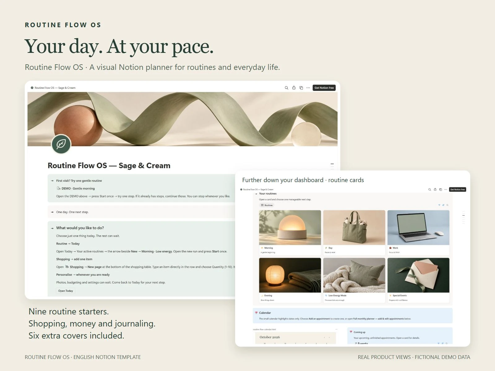
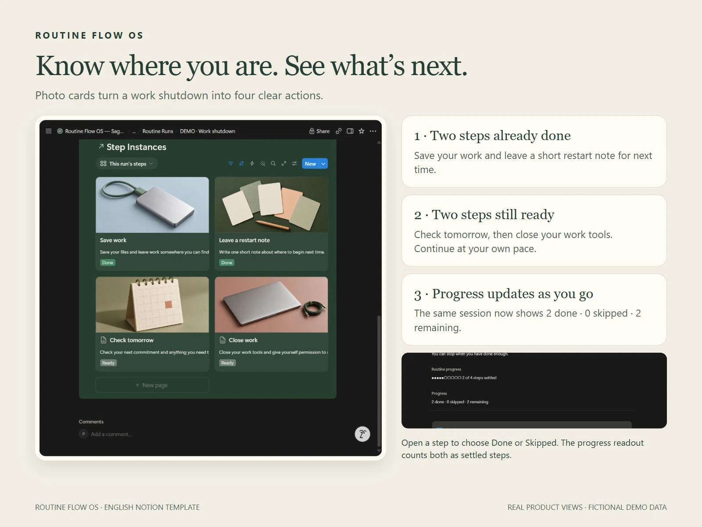
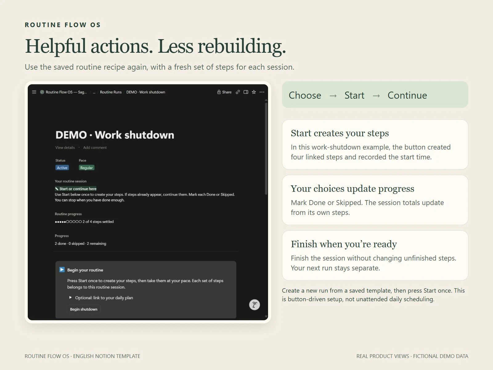
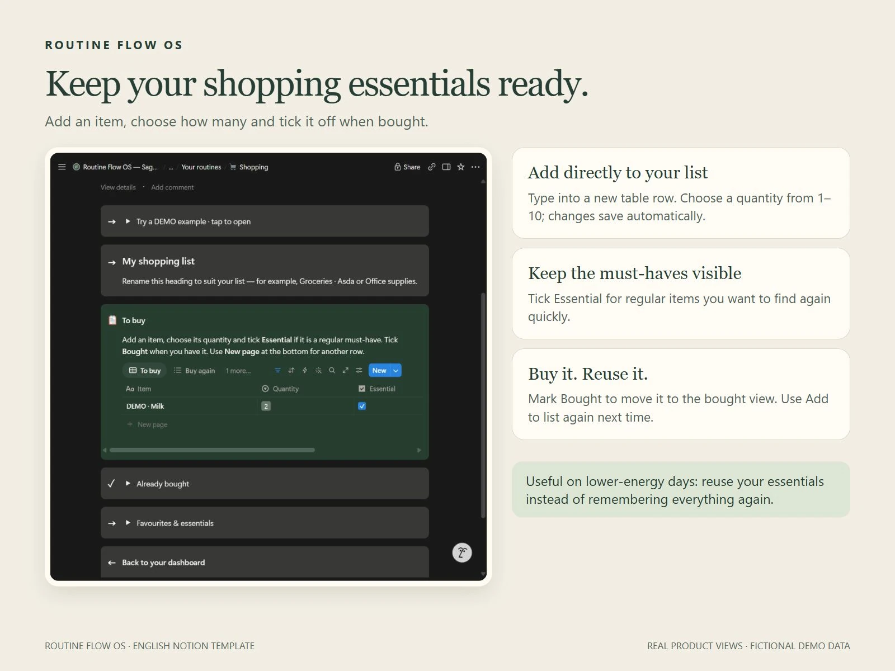
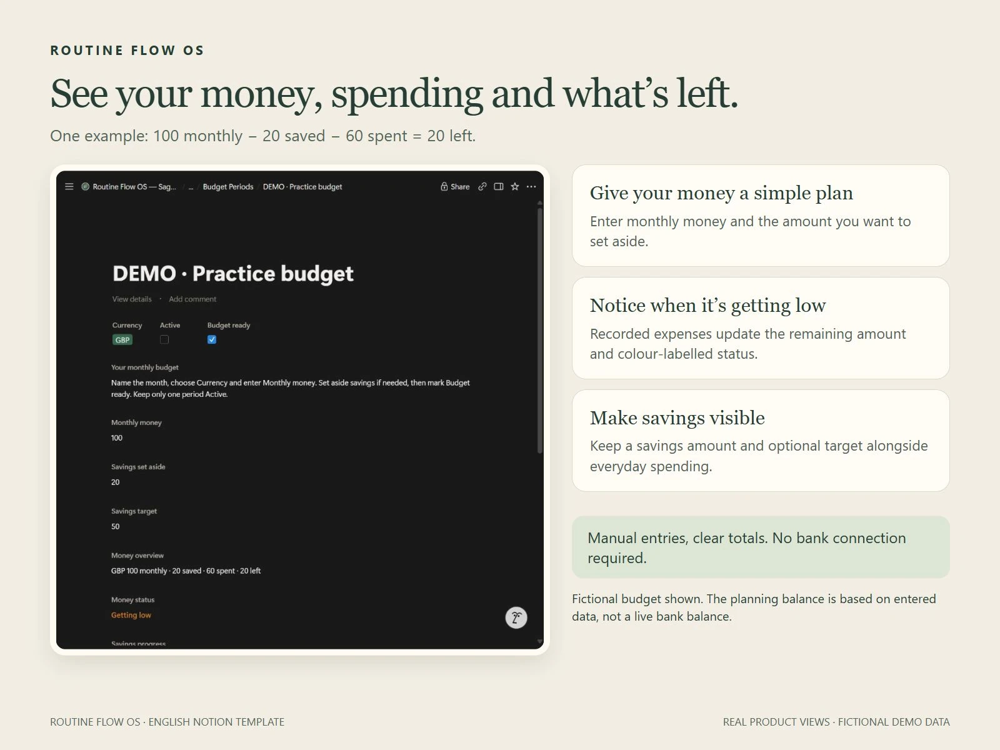
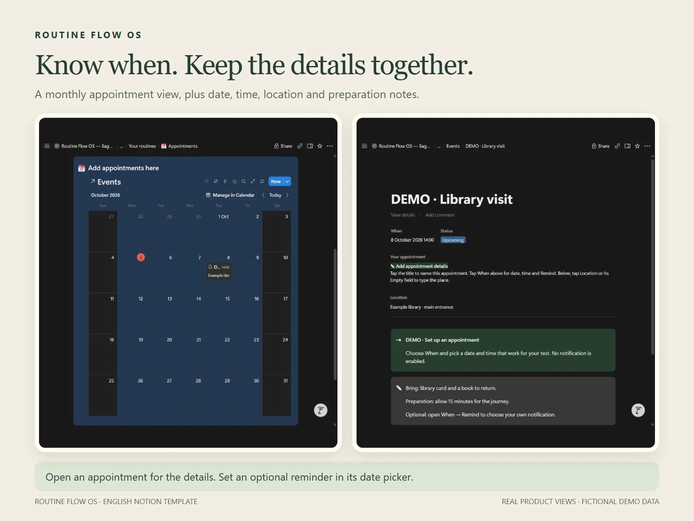
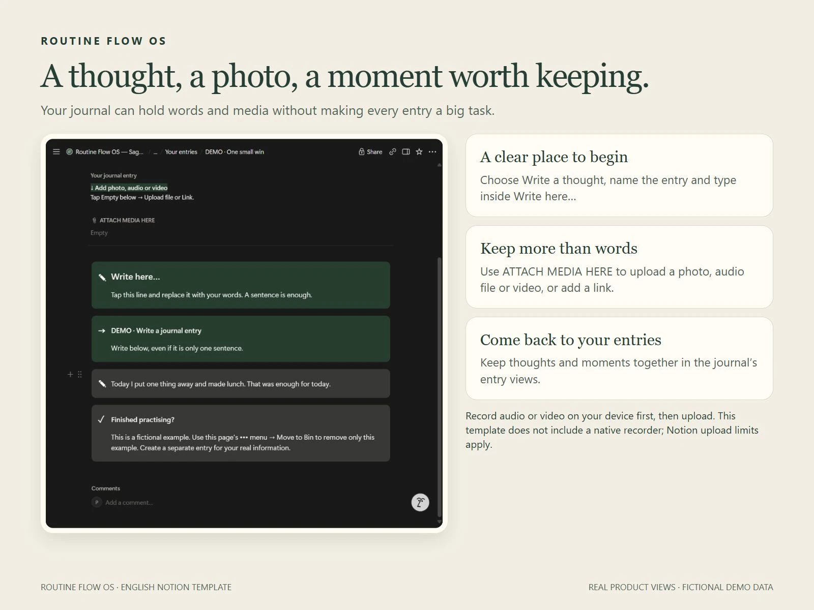
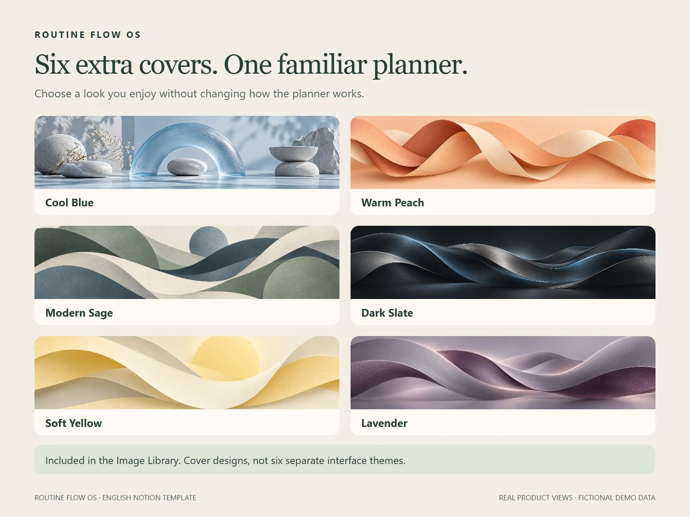
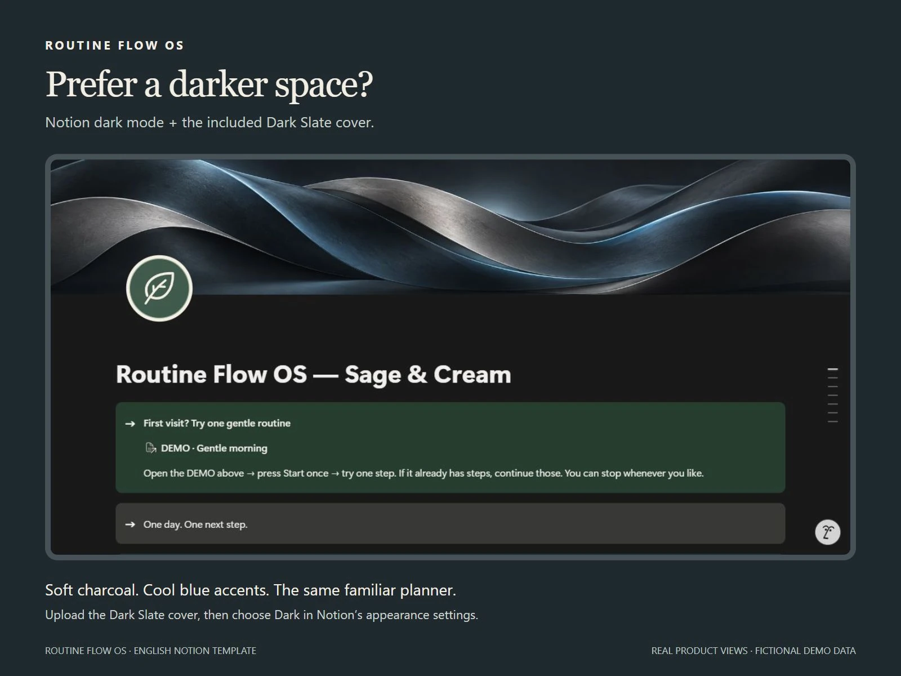

Start with fresh steps.
Create a session from a saved routine and press Start once. Choose Done or Skipped on each step and see your own session progress update.

Real planner views. Light mode shown; dark appearance and six extra covers are included below.
See the planner in action ↓VISUAL NOTION PLANNER · ENGLISH
One manageable next step, with a place for the rest.
US$38 One payment · Six extra covers
A visual workspace for routines, shopping, money and your journal. Designed with neurodivergent adults in mind, with clear photo cards, contained sections and labelled examples to help you begin.
Your planner. Your pace.
Get Routine Flow OS — US$38Continue to Payhip for secure checkout and digital delivery. Applicable sales tax/VAT is included in the displayed price.
Requires your own Notion account. Digital template; no physical item or standalone app.
SMALL ACTIONS. USEFUL SUPPORT.
Use the parts that help you. A routine can be a full sequence or just one manageable next step.
Create a session from a saved routine and press Start once. Choose Done or Skipped on each step and see your own session progress update.
Reuse shopping items, see spending and savings, and keep appointments with their preparation notes. Money totals come from your manual entries.
Write in a labelled journal box or upload a photo, voice recording or video from your device. Keep memories and small wins together.
LOOK INSIDE
Real product screenshots with fictional examples. Select an image for a closer look.








A GENTLE FIRST VISIT
Your ZIP includes a Start Here PDF, template access link and six optional banner images.
Sign in to Notion and duplicate the complete planner into your own workspace. Desktop is usually easiest for setup.
Open Start Here or the labelled DEMO morning routine. Try a step before personalising the rest.
BEFORE YOU BUY
Nine routine starters, routine sessions and progress, shopping reuse, manual budgeting, savings tracking, appointments, tasks, meals, home organisation, weekly reset, a journal and Pause & Reset resources. Start Here, Help & Recovery, labelled examples and six extra covers are included.
Use your copy through Notion on desktop, tablet or mobile. Layouts and controls differ by device. Start with a desktop browser for duplication, then open the same account and workspace on your phone.
Routine buttons create fresh steps for each session; progress updates from your Done and Skipped choices. This is button-driven setup, not unattended daily scheduling. Appointment reminders are set separately and depend on your Notion notification settings.
No bank connection or external calendar sync is included. Money entries are manual. Record audio or video on your device first, then upload it into the journal. Notion upload and chart limits depend on your plan; category totals are available without a chart.
No. They are optional banner images for the same planner: Cool Blue, Warm Peach, Modern Sage, Dark Slate, Soft Yellow and Lavender. Use Notion's appearance preferences to choose light or dark mode.
Yes. Remove individual labelled DEMO entries manually when you are comfortable. Keep the supporting databases and reusable templates. Edit your own duplicate; it does not automatically receive later seller changes.
Start with Help & Recovery in your planner, or email thesenandcotoolkitstudio@hotmail.com.
ONE DAY. ONE NEXT STEP.
One payment · Digital delivery · Your own Notion workspace